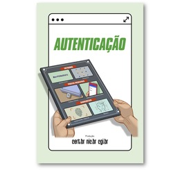
Autenticação
Senhas fortes, gerenciador de senhas e verificação em duas etapas para impedir que alguém entre nas suas contas.
🎬 Vídeos curtos do Cidadão na Rede (6)
Leia também aqui no site: WhatsApp clonado e golpe do falso parente
Segurança digital também é cultura: quanto mais gente conhece os riscos, menos golpes dão certo. Reunimos aqui os fascículos gratuitos da Cartilha de Segurança para Internet, produzida pelo CERT.br. Cada fascículo trata de um tema e pode ser lido no celular, impresso ou usado em palestras e aulas.
© CERT.br/NIC.br · Licença CC BY-NC-ND 4.0 · Direitos de uso e créditos

Senhas fortes, gerenciador de senhas e verificação em duas etapas para impedir que alguém entre nas suas contas.
Leia também aqui no site: WhatsApp clonado e golpe do falso parente
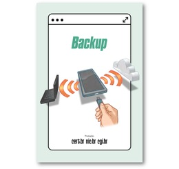
Como fazer cópias de segurança dos seus arquivos e fotos para não perder tudo em caso de defeito, furto ou ataque.
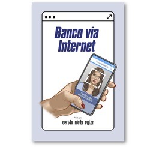
Cuidados ao usar o app e o site do banco, o Pix e o cartão, e como reconhecer contatos falsos em nome do banco.
Leia também aqui no site: Golpe da falsa central de atendimento · Golpe do motoboy
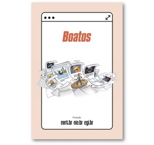
Como identificar notícias falsas e correntes antes de compartilhar, e por que a desinformação também é usada em golpes.
Leia também aqui no site: Phishing: links e e-mails falsos
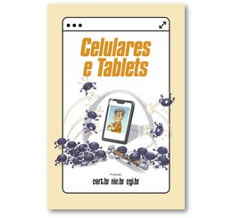
Configurações e hábitos para proteger o celular e o tablet: bloqueio de tela, atualizações, apps confiáveis e localização.
Leia também aqui no site: WhatsApp clonado
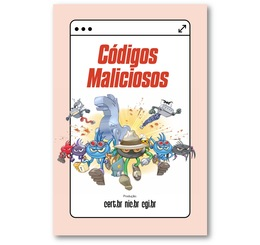
O que são vírus, ransomware, programas espiões e outros códigos maliciosos, como chegam até você e como se proteger.
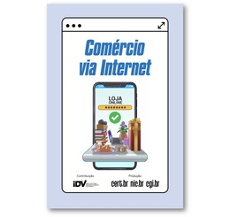
Como comprar e vender pela internet com segurança e reconhecer lojas, anúncios e compradores falsos.
Leia também aqui no site: Lojas e anúncios falsos · Golpe do iFood · Golpes de Black Friday
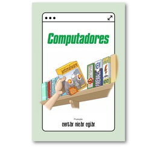
Atualizações, antivírus, contas de usuário e outros cuidados básicos para manter o computador protegido.
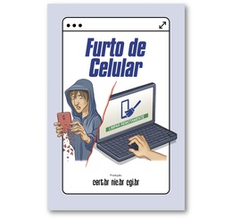
O que fazer antes e depois de ter o celular roubado ou furtado para proteger suas contas, seu banco e seus dados.
Leia também aqui no site: WhatsApp clonado
Os golpes mais comuns na internet e por telefone, e a atitude que protege contra todos eles: desconfiar e confirmar.
Leia também aqui no site: Phishing · Golpe do falso advogado · Golpe do falso INSS
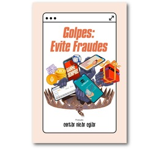
Sinais de alerta e medidas práticas para não cair em fraudes financeiras, com Pix, boletos, cartões e falsos contatos.
Leia também aqui no site: Golpes do Pix · Boleto falso · Falsa central
Passo a passo para agir rápido depois de cair num golpe: avisar o banco, proteger as contas e registrar a ocorrência.
Leia também aqui no site: Caí no golpe do Pix: o que fazer agora
Como usar ferramentas de inteligência artificial com responsabilidade, protegendo seus dados e conferindo as respostas.
Leia também aqui no site: O que é deepfake e como se proteger
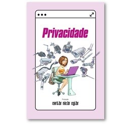
Como controlar o que você expõe na internet e nas redes, e por que suas informações pessoais têm valor.
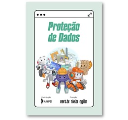
Seus direitos sobre os dados pessoais, conforme a LGPD, e cuidados para não entregar informações demais.
Como proteger a rede Wi‑Fi de casa e tomar cuidado com redes públicas, roteadores e dispositivos conectados.
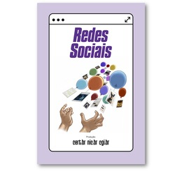
Configurações de privacidade, cuidado com o que se publica e como evitar perfis falsos e invasões nas redes sociais.
Leia também aqui no site: WhatsApp clonado · Lojas e anúncios falsos
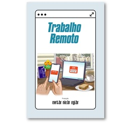
Boas práticas para trabalhar de casa ou em qualquer lugar sem colocar em risco os dados da empresa e os seus.
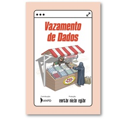
O que fazer quando seus dados aparecem em um vazamento e como reduzir os riscos de golpes depois disso.
Leia também aqui no site: Phishing · Golpe do falso advogado
Outros materiais do CERT.br que complementam os fascículos.
A Cartilha completa, com 14 capítulos sobre segurança na internet, glossário e índice remissivo.
Dicas curtas para proteger dispositivos, contas e dados e para evitar golpes, fraudes, boatos e spam.
As principais iniciativas de segurança da internet no Brasil reunidas em um só lugar.
© CERT.br/NIC.br. Fascículos da Cartilha de Segurança para Internet, produzidos pelo CERT.br (Centro de Estudos, Resposta e Tratamento de Incidentes de Segurança no Brasil), do NIC.br (Núcleo de Informação e Coordenação do Ponto BR).
Fonte: Cartilha de Segurança para Internet, autor CERT.br/NIC.br - https://cartilha.cert.br/.
Os fascículos são distribuídos sob a licença Creative Commons Atribuição-NãoComercial-SemDerivações 4.0 Internacional (CC BY-NC-ND 4.0). Em resumo, ela permite copiar e redistribuir o material em qualquer meio ou formato, desde que:
Os termos completos estão na página de licença da Cartilha. A licença dos slides é informada nas notas dos próprios slides.
O Não Caia no Golpe é uma iniciativa sem fins lucrativos. As capas e os ícones são reproduzidos sem alterações, e os arquivos em PDF são abertos diretamente do site oficial do CERT.br. Os textos de apresentação de cada fascículo e as indicações de guias relacionados são do Não Caia no Golpe. Esta página não indica apoio ou endosso do CERT.br ou do NIC.br ao nosso site. Para impressão, parcerias ou versões personalizadas, siga as orientações de uso dos materiais do CERT.br.
Veja a página de créditos da Cartilha.